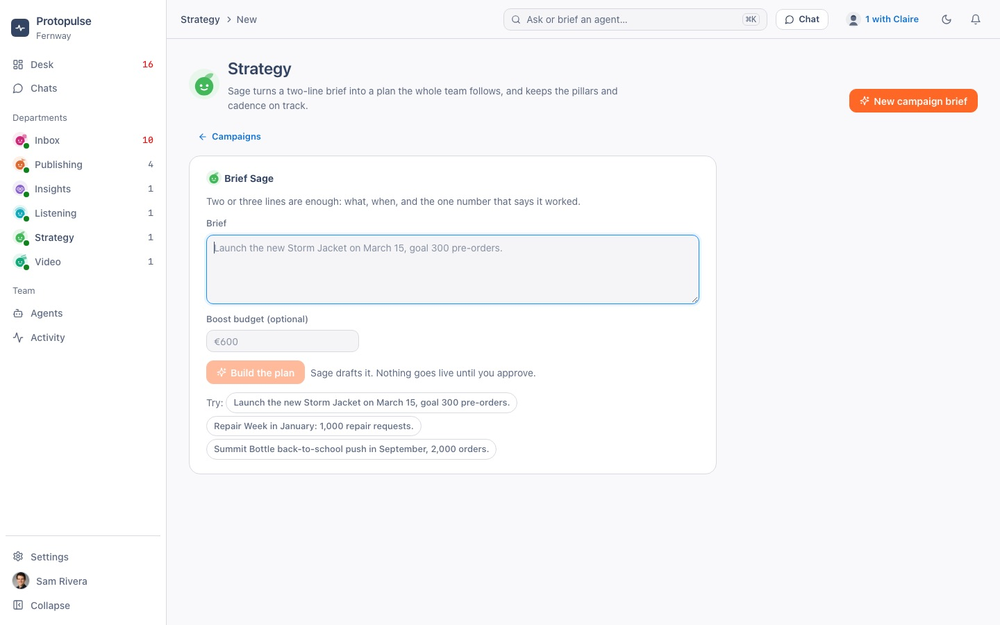
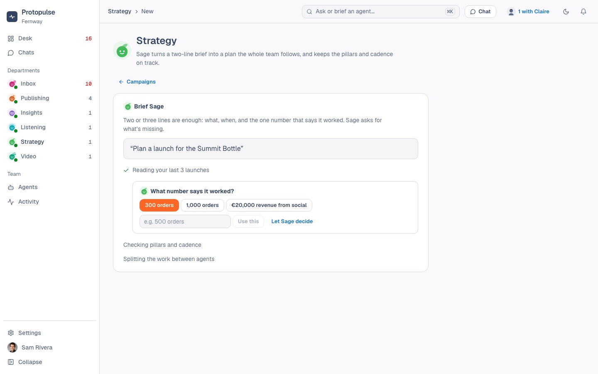
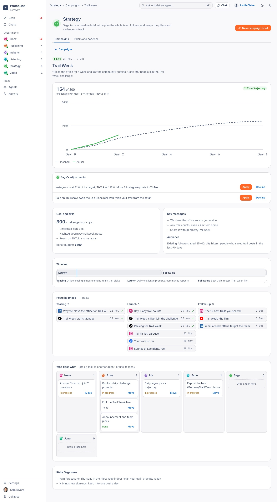
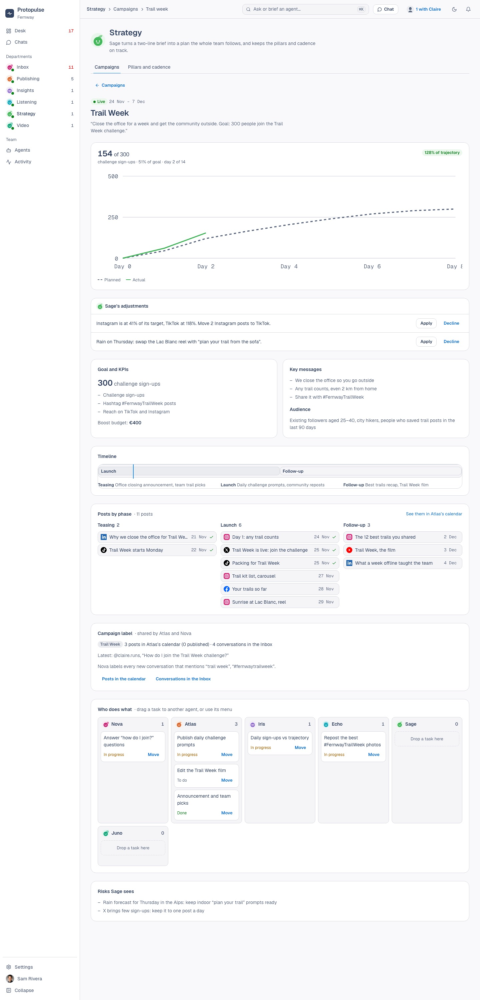
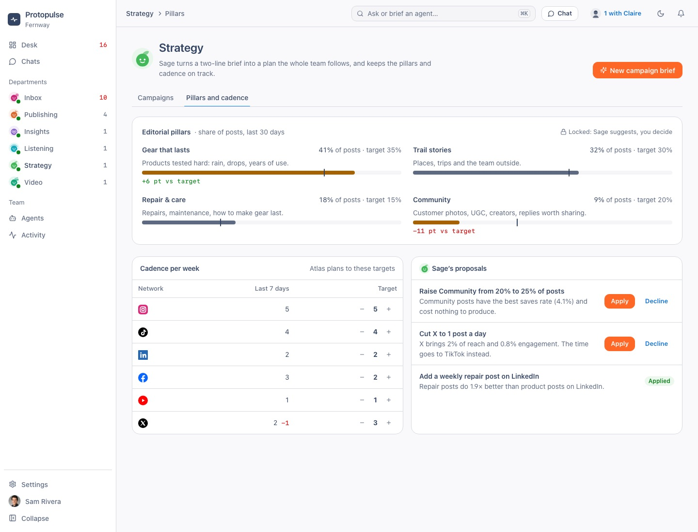
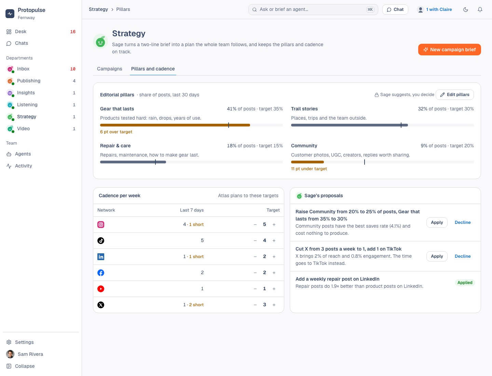
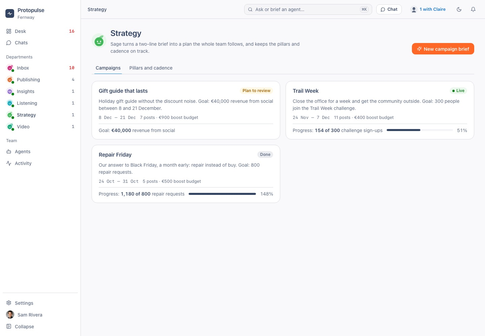
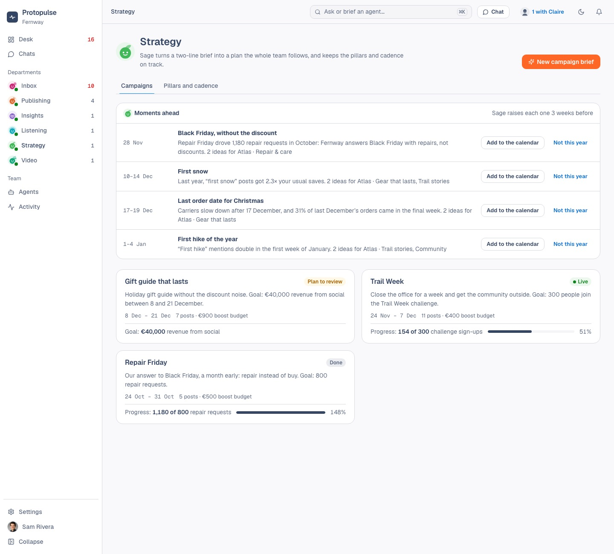

Sage, strategy: agent depth
Session of 25 November 2026. Strategy now drives the other agents: a one-line brief becomes a campaign built for its goal, product and season, every post lands in Atlas’s calendar, Nova labels its conversations, results come in with the days and Sage proposes real fixes when the trajectory drifts. Backlog: design-plans/agent-depth/sage-backlog.md, decisions: sage-log.md.
Parity, before and after
Each capability answers the seven agentic-first questions in code; the PR body holds the grid.
| Capability | Before | After | PR |
|---|---|---|---|
| Campaign → calendar | Only the first post went to Atlas, as a Desk card | Every post still to come lands in Atlas’s calendar (campaign, pillar, label), through Atlas’s receivePosts; Undo and Discard take them back | #30 |
| Guardrail “Active campaigns: 2 max” | Shown, never applied | Approve disabled with the reason; the Desk card comes back with it; reads the value Sam sets on Sage’s profile | #30 |
| Plan from Strategy | No Desk card when the brief was typed in Strategy | Same card as a brief from Echo or Atlas; Suggest / Draft / Act change what happens | #30 |
| Proposals, cadence, adjustments | Apply changed nothing; adjustments wired by id; no Undo | Each carries its effect (targets, post moves) and a real Undo; the Day 1 card sets the pillars it shows | #46 |
| Pillar and cadence actuals | Typed in the seed | Computed from Atlas’s posts (30 days, last 7 days) | #39 |
| Sage in Chat and ⌘K | Briefs only | “How is Trail Week doing?”, “Is Community behind?”, “Put more Community in the mix”, with the screens’ numbers | #42 |
| Complete brief | Text and budget; Sage guessed the rest | Optional details; Sage asks for the goal and the date when they’re missing; assumptions shown on briefs from other agents | #57 |
| Credible plan generator | The same 10 posts for any brief; a regex v2 | Template by goal, product angles, season, networks from the cadence; v2 applies every request in the note | #63 |
| Live goals | Trail Week frozen on day 2 | Results come in with the days; Sage proposes real moves or a new goal off 85–120% of trajectory (Draft, or alone on Act) | #69 |
| Editable pillars | Read-only | Sam reweights, renames, describes and adds pillars; Sage checks names, sum and posts-a-week impact; a renamed pillar keeps counting its posts; Undo | #79 |
| Campaign recap | Seeded on Repair Friday only | Written by Sage at the end, a Desk card, the lesson as a proposal, and Iris’s full report behind “Full recap” | #86 closing PR |
| Calendar moments (≈ Calendar notes) | None | 4 moments raised 3 weeks before, added with ideas for Atlas and shown on their days in Atlas’s calendar, new action Plan for calendar moments | #95 |
| Campaign labels (≈ Labels) | labels unused | Label on Atlas’s posts, and on conversations through Nova’s own Inbox rule; link to the filtered Inbox | #100 |
New campaign brief


Trail Week


Pillars and cadence


Campaigns


Checks
- Done
npm testandnpm run buildgreen on every PR and onmainafter each merge; PR CI green before each merge. - Done
Each Sage action in its three levels: plans (Suggest card, Draft card, launched alone on Act), cadence and trajectory (card or applied alone), moments (card or added alone), all with Undo, under test.
- Done
Guardrail applied (2 live campaigns), read from its editable value.
- Done
1440 and 375 (no horizontal scroll on the five Strategy screens, emulated mobile), light and dark from tokens; campaign cards no longer force 380 px at 375.
- Done
Contracts with others honoured both ways: Atlas’s
receivePosts/withdrawPostsandarriveIdeas, Nova’s label and Inbox rule actions and/inbox?label=, Iris’swriteCampaignReport; Sage exposestargetsOf,mixOf,lastWeekOf,themesOf.
Still open
Simulated campaign results
Results drift toward a pace per campaign (
ponytail:in the slice) until Iris exposes attribution per campaign.Later at pitch
Tasks that move by themselves, monthly review on the 1st, campaign budget, campaign UTM. Dropped: Claire’s budget approval.